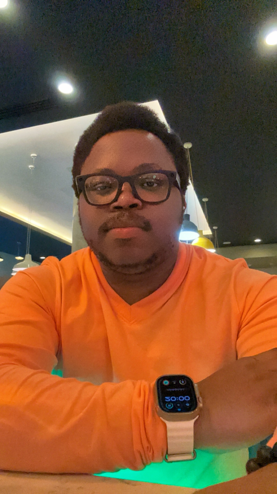

GPU-accelerated reservoir simulation, physics-informed neural operators, and Bayesian inverse problems. Building the next generation of scientific machine learning for subsurface flow and carbon capture.

I am a Senior DevTech Engineer in the Energy team at NVIDIA, working at the intersection of GPU computing, scientific machine learning, and subsurface physics. My research focuses on making physics-informed neural operators fast and accurate enough to replace traditional numerical simulators in real-world energy workflows — from reservoir management, reservoir simulation, reservoir history matching to carbon capture and storage at scale.
My PhD at the University of Manchester (main supervisor Rossmary Villegas, with co-supervisors Oliver Dorn, Masoud Babaei, and Constantinos Theodoropoulos, and a postdoc under K.J.H. Law, joint between the University of Manchester and Oak Ridge National Laboratory) focused on reservoir history matching, inverse problems, and parametrising unknown geological fields with exotic generative priors — variational autoencoders (VAE), the discrete cosine transform (DCT), and K-SVD dictionary learning — to regularise otherwise severely ill-posed inversions. The central challenge: given noisy observations y, recover the unknown parameter field u by characterising the posterior
with the field itself reparametrized through a low-dimensional generative code,
where D is a decoder learned via VAE, DCT, or K-SVD, and G : u ↦ y is the forward operator — classically a full black-oil PDE solve, now replaced by a learned neural surrogate. This work is applied directly to reservoir history matching, CO₂ plume migration, and ensemble-based inversion (ES-MDA, aREKI) with generative priors.
During my postdoc, I developed the CCR (Cluster Classify Regress) framework for learning highly nonlinear discontinuous functions across sharp phase boundaries — a persistent failure mode for standard regression. Building on this, I have applied PINO and FNO-based surrogates to the Norne field black-oil benchmark (46×112×22 grid, multi-phase, multi-well), solving the parametric PDE family
across thousands of permeability realisations in a single forward pass, achieving up to 6000× speedup over conventional simulators. I contribute to the NVIDIA PhysicsNeMo open-source framework.